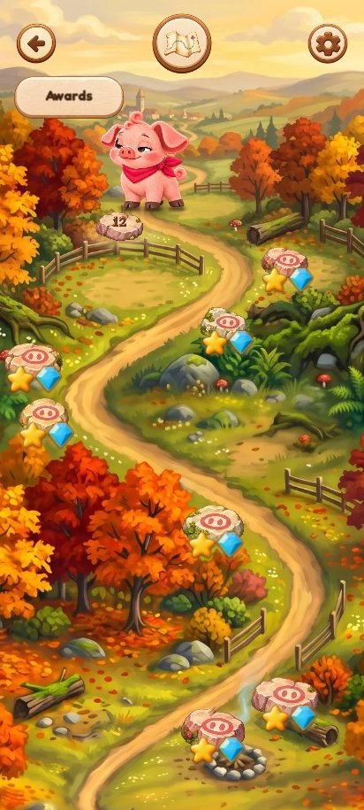
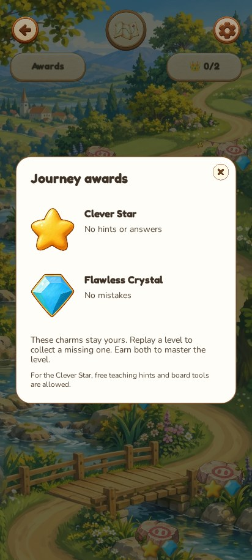
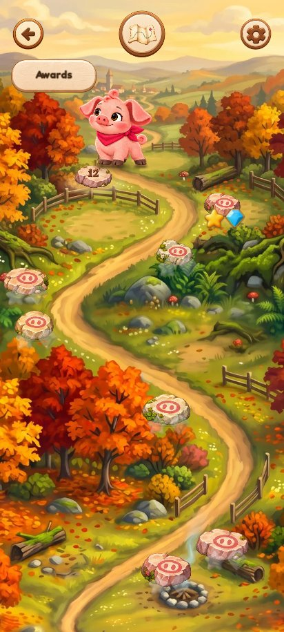

Before/after artwork, including phone-size and grayscale comparisons.

412×915 production map with earned and missing rewards.

The map guide explains earning conditions, permanent ownership and replay.

Captured earning-reveal frame. The per-frame trace verifies the star pop, crystal settle and brief glint. Existing rewards stay still; reduced motion shows the final state immediately.
Build e181559845fb802fa43ee049576b1287991bb593. This review and the playable preview use the same source head.